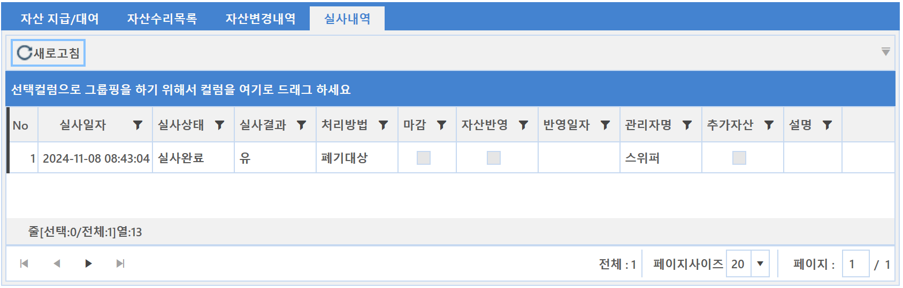

7-1-3-4. 실사내역
7-1-3-4. 실사내역
Source: https://www.sweeper.or.kr/etc/manual/7134.html
7-1-3-4. 실사내역
7. 자산 ›› 7-1. 자산현황 ›› 7-1-3. 자산목록 ››


각 자산별 자산 실사이력을 확인할 수 있습니다.
개별 자산 기준으로 생성된 실사 이력을 쉽게 조회할 수 있도록 했습니다.

© Copyright SWeeper Inc.. All Rights Reserved